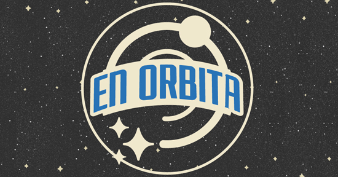
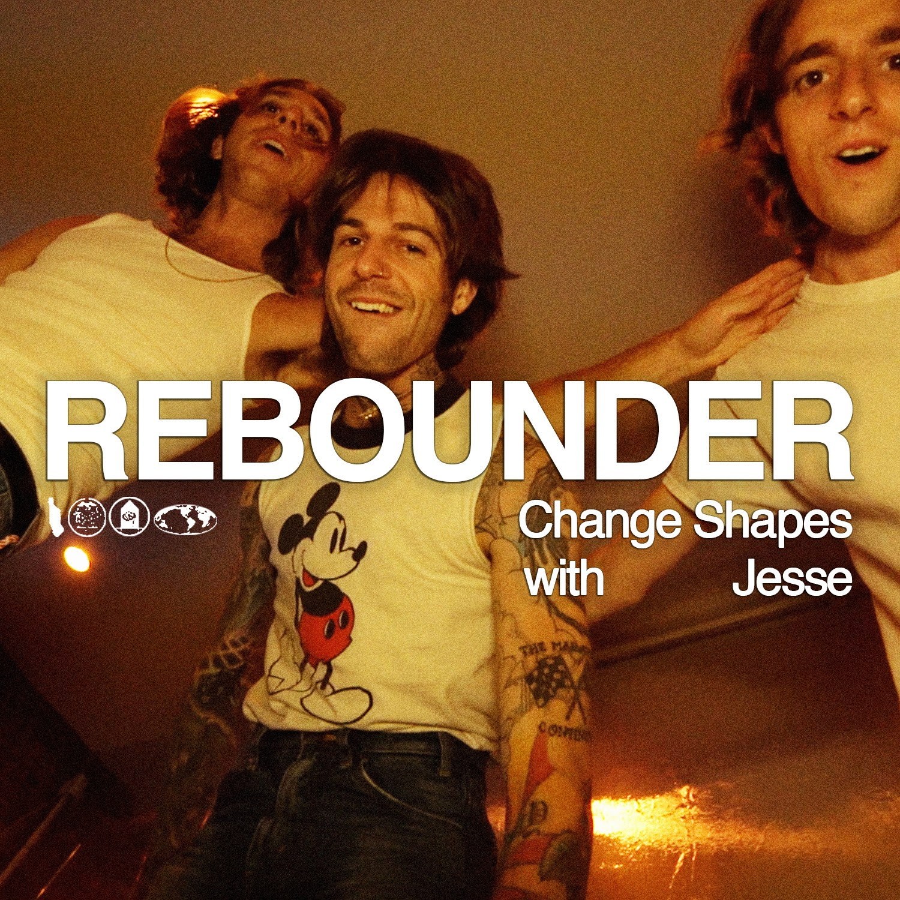

Nuestros redactores
Grupo 9

Los originales trayendoles la ultimitas
Nuestros miembros:
Briceño Lazo, Jorge
Tolentino Mayhuire, Brayan
NOTICIAS
Martes, 15 de junio del 2021
el rock en una colaboración ‘maldita’
El músico y actor Álex de Lucas se transforma en un siniestro predicador frente a la Iglesia de Buen Suceso de Argüelles, vestido entero de blanco y con una biblia en la mano, mientras Diego García, el otro integrante de la banda The Parrots, es un diablo que anuncia en la calle del Carmen que Venecia se hunde, que las flores se pudren y que la juventud se le escapa. Ocurre en Maldito, el nuevo vídeo musical de estos madrileños grabado en pleno centro de la capital junto a un espeluznante C. Tangana, con el que se funden en una pelea tras otra. Parecen salidos de una película de Alex de la Iglesia, pero detrás está CANADA, la productora catalana que ha trabajado con Dua Lipa, Rosalía, Beck o Bomba Estéreo. “Grabarlo ha sido muy divertido. Caracterizarte tanto para actuar te hace crecer dentro del personaje. A nosotros nos gusta mucho el cine y cuando hacemos canciones pensamos en lo que puede evocar, como si fuese una banda sonora”, explica de Lucas desde Metropol Estudios.
Hace casi dos años C. Tangana les escribió por Instagram para que hicieran algo juntos. Todavía no estaba fraguado su reciente éxito de El madrileño. Diego cuenta que se enseñaron las cosas que ambos tenían y que de repente vieron claro la canción en la que podían colaborar. “Él no había hecho nada cercano al rock y yo creo que se le fue un poco la olla y se lanzó. Al final ha quedado una canción preciosa y estamos súper contentos, es un lujo currar con él”, comenta Diego, que suele escribir los temas de una forma minimalista mientras que su compañero, también en la treintena, es el que inspira las variaciones más melódicas. Este nuevo sencillo lo tenían compuesto antes de la pandemia, pero decidieron parar el lanzamiento porque ellos disfrutan y brillan en los directos, en donde consiguen que salten chispas con el público. “Haber pasado dos años trabajando en algo y de repente quedarte en casa y tener que verlo desde YouTube era un bajón. En parte tuvimos suerte porque la gente que estaba con nosotros apoyó nuestra decisión de posponerlo”, señala Diego, que reconoce que han vivido esta espera con mucho estrés. El grupo está trabajando en nuevas canciones y varias de ellas serán en español, aunque The Parrots haya apostado casi siempre por el inglés, idioma que les ha otorgado una proyección internacional que no han tenido otras bandas españolas. Y es que ellos nacieron en 2008 de un pequeño sello de Inglaterra. “Cantamos en castellano y puede venir de la influencia de cosas que llevábamos sin escuchar desde hace 10 años. Será un álbum libre de prejuicios y bastante ecléctico, y hay mucho de lo que antes no demostrábamos que estábamos orgullosos de que nos gustaba. El otro día le decía a Álex que no paraba de ponerme a Pereza. A lo mejor lo teníamos tan cercano que no lo valorábamos.”, indica entre risas Diego, que apunta a que este trabajo, fiel a su aire gamberro y que no se ha guiado por modas, se acerca también a la música disco y al Kraut Rock, corriente experimental surgida en los 60 en Alemania.
Lunes, 14 de junio del 2021
Festival En Órbita llega por primera vez a Perú y anuncia pre-party
El Festival En Órbita se realizará el próximo 21 y 22 de noviembre por primera vez en Lima. El line-up está liderado por las bandas Thee Oh Sees (EE. UU.), SUUNS (Canadá) y Yonatan Gat (Israel).
El Festival En Órbita llegará por primera vez en el Perú. Este evento que presenta lo mejor de la música alternativa se realizará el próximo 21 y 22 de noviembre en el Centro de Convenciones de Barranco. De momento, se ha confirmado que el line-up está liderado por las bandas Thee Oh Sees (EE. UU.), SUUNS (Canadá) y Yonatan Gat (Israel). Asimismo, la organización anunció que a través de redes sociales un pre-party exclusivo para los asistentes al evento. Será una fiesta que se realizará el 31 de octubre en la terraza del restaurante Plaza San Martín, con la presentación especial del DJ holandés Makam, el dúo de dreampop experimental Laikamorí, la artista electrónica Lara Nuh, la reconocida DJ peruana Orieta Chrem, la DJ y artista visual Valicha y el DJ Rodrigo Villanueva, quienes compartirán dos escenarios en la fecha que se suma al Festival.Quienes adquieran su entrada para el 21 y 22 de noviembre podrán también ingresar al pre-party del Festival En Órbita este 31 de octubre. Asimismo, quienes quieran asistir solo a la fiesta de Halloween, podrán adquirir su entrada a través de la plataforma de Joinnus.
jueves, 08 de julio del 2021
Reboteador - "Change Shapes" (con Jesse Rutherford)
Rebounder , el proyecto de Dylan Chenfeld de Manhattan, regresó recientemente con su nuevo y alegre sencillo "Change Shapes", que cuenta con la voz del cantante principal de The Neighbourhood, Jesse Rutherford.
La pista encuentra un encanto pop dirigido por sintetizadores que captura el estado de ánimo de un verano sofocante pasado en Nueva York. La pista cuenta con muchos ganchos pop divertidos y un espíritu colorido que es contagioso y lleno de buenas vibraciones. Disfruta del video musical de "Change Shapes" a continuación, que además de Dylan y Jesse presenta a Noah Chenfeld .
Lunes, 14 de junio del 2021
Green Day prepara nuevo material musical para 2021

En declaraciones para medios internacionales , el líder de Green Day, Billie Joe Armstrong reveló que durante la inactividad ha estado escribiendo mucho para la banda. En estos últimos meses, sin duda el vocalista mantuvo activo a la agrupación y su carrera en solitario con las versiones de No Fun Mondays y un nuevo disco de The Network , pero cuando fue consultado sobre un nuevo álbum señaló: “Siempre estoy armando algo, ya sea una demostración completa en mi pequeño estudio o solo algunas notas de voz en mi teléfono”, y el bloqueo de los escritores aparentemente no lo afecta, ya que a menudo trabaja en versiones de canciones solo para mantener el impulso de seguir haciendo música. Asimismo reveló que el nuevo disco de Green Day “podría llegar bastante rápido” debido al inesperado tiempo de inactividad que golpeó a todos en 2020 , “Es posible. Ya sea que hagamos un álbum completo o un EP o simplemente una canción, tenemos muchas opciones diferentes. Es una cuestión de cuándo ocurre el momento adecuado. Esa es la belleza de la forma en que puedes sacar música en estos días. No tienes que esperar a que ningún portero te diga que es el momento adecuado”.
Sábado, 22 de mayo del 2021

Abrimos nuestro canal de YouTube!!
Un playlist recomendado? Lo tienes aqui.
Sábado, 22 de mayo del 2021

Abrimos nuestro canal de Soundcloud!!
También estamos en Soundcloud. La página indie por excelencia no podía estár fuera de nuestra mira. Descubre las mas escondidas joyas musicales antes que nadie aqui.